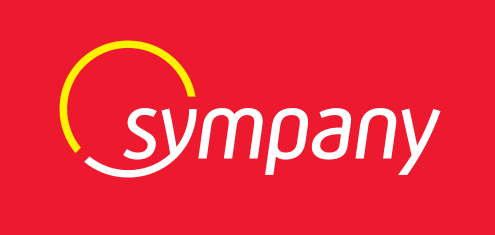
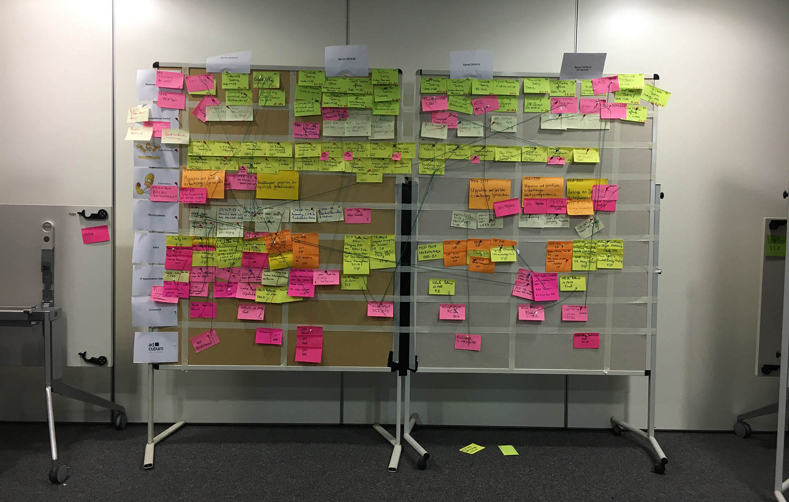

Metamorphosing the decision-making
Metamorphosing the decision-making
process with SAFe
-
Julian GERSTACKER Agile Transformation Manager
at Sympany
Julian GERSTACKER
Agile Transformation Manager
at Sympany

Founded 100 years ago, Basel-based Sympany is a respected insurance company catering to the Swiss and German markets. The company offers accident, health, property, and liability insurance coverage. Sympany’s 500 employees oversee more than 260,000 customer relationships, amounting to around CHF 1 billion (~USD 1.1 billion) in revenues from insurance premiums alone.
The company started a cultural shift two years ago by introducing a common Agile-at-scale framework—SAFe (Scaled Agile Framework)—into its business operations. The key objective of making this change was to break down the walls between departments and bring more transparency around achievements and issues across the company’s management and development teams. Sympany’s Agile Transformation Manager, Julian Gerstacker has led the charge of this from the very start.
The decision to move in this direction was a decisive moment aimed at ensuring the sustainability and future success of this century-old business. “Many startups have launched recently with the objective of revolutionizing the insurance experience. Sympany had to find ways of being more flexible to adapt to circumstances and eventually get ahead of the market,” Julian points out.
Before the COVID-19 pandemic rattled the world, 10 different Scrum and Kanban teams used to meet every 10 weeks for a two-day PI Planning session. This meeting would take place in a large hotel conference room where the roughly 80-person development team, plus other key stakeholders would spend the two-day stretch collaborating on ideas and putting sticky-notes all over the place. During these meetings, a large conference room wall was essentially transformed into the team’s living Program Board.
This all changed when lockdown measures were enforced and most of Sympany’s employees had to begin working from home. After trying to build a virtual Program Board via a dedicated Jira add-on unsuccessfully, Julian made the switch to Draft to build a comprehensive PI Planning Board. This included an agenda, a Program Board, and a Risk Roaming matrix. Combined with Microsoft Teams’ virtual meeting capabilities, much of what once required physical interaction could now be replicated effectively in the digital space.
For Julian, the Scaled Agile Framework process has revolutionized his team’s ability to collaborate seamlessly, even in a 100% virtual capacity: “PI Planning forces us to define clearer goals that make issues obvious while encouraging increased accountability.” In addition to Draft, he documents all the processes in Confluence—increment by increment—to track every decision and change to the initial plan easily.
Between every PI Planning—and in addition to ongoing Scrum or Kanban ceremonies at the team level—Julian implemented a tailor-made process for maximizing team alignment, enabling everyone to “see the bigger picture and to focus on driving valuable, organization-wide outcomes rather than tackling team-specific priorities in various siloes.” This process consisted of three separate meetings, each occurring every two weeks:
According to Julian, shifting to remote PI Planning has lost both the flexibility and spontaneity of team communications as well as a shared sense of ownership in the end-to-end process. Even so, the benefits of this still offset the detriments. Now he’s able to document PI Planning far better than ever before, making it easier for everyone on the team to keep track of all of the actions and decisions made during those meetings.
And finally, being able to share the outcomes of PI Planning meetings—including the latest version of the roadmap—to management and stakeholders, Julian has become much more than just the “sticky-note guy,” which can be the perception at the beginning of any Agile transformation. Now, he’s indisputably viewed as a strategic asset to the entire team.
Draft made it possible to replace those expensive creative collaboration spaces covered in sticky-notes and provide Sympany with a better and more innovative way to work and collaborate. Julian sums it up nicely, “Everyone can now be creative at home.”
“I want to bring Agile philosophy to every decision-making layer of the organization in order to help innovative ideas sprout from the bottom up,” even knowing that this can be a huge challenge to overcome in typically hierarchical Swiss businesses.
Additionally, to avoid Jira’s inherent constraints around the freedom and skills required to put project management tools in place, Julian “will also help teams build their own visual management artifacts on Draft,” including customized Kanban boards.”